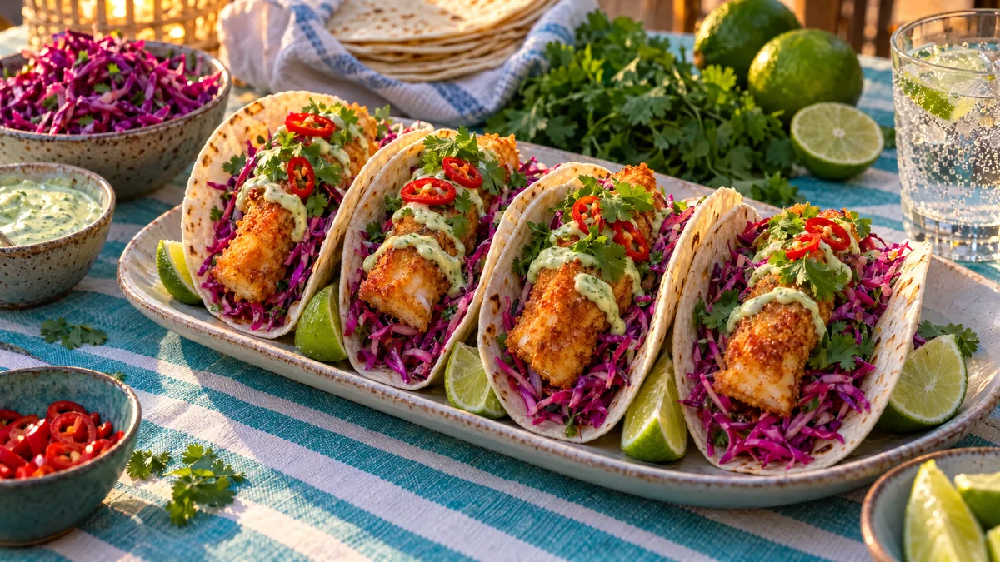

RESTFEST · RECEPTHuvudrätt
Fiskpinnetacos med rödkålsslaw och limemajonnäs
Frysta fiskpinnar blir krispiga tacos med knaprig, lila rödkålsslaw, limemajonnäs och koriander i varma tortillas. Barnens favoritmat i en färgsprakande vuxenversion, klar på 20 minuter.
- Förberedelse
- 15 min
- Tillagning
- 20 min
- Portioner
- 4 (8 tacos)
- Nivå
- Nybörjare
 Det här behöver du
Det här behöver du
JÄMFÖRT MED DIN KYL
Tryck på + vid det du behöver köpa.
Tacos
Rödkålsslaw
Limemajonnäs
Till servering
Gör så här
- Sätt ugnen på den temperatur som står på fiskpinnarnas förpackning, oftast 225 grader. Lägg fiskpinnarna på en plåt med bakplåtspapper och grädda i 15–18 minuter. Vänd dem halvvägs så att båda sidorna blir krispiga.
- Strimla rödkålen så tunt du kan, med en vass kniv eller mandolin. Massera kålen med limesaft, salt och socker i 1 minut. Låt stå i 10 minuter, då blir den mjukare och klart magentafärgad.
- Skiva salladslöken tunt och vänd ner den i slawen.
- Rör ihop majonnäs, limeskal, limesaft och chiliflakes.
- Värm tortillorna en i taget i en torr stekpanna på hög värme, 20–30 sekunder per sida. Lägg dem i en vikt kökshandduk så att de håller värmen.
- Lägg en sked slaw på varje tortilla och toppa med två fiskpinnar.
- Ringla över limemajonnäs och toppa med koriander och chili.
Dekoration och servering
- Fyll en spritspåse eller fryspåse med limemajonnäsen och spritsa tunna sicksackränder över fiskpinnarna.
- Ställ tacosen tätt i rad på ett avlångt fat, så att de stöttar varandra.
- Servera med limeklyftor och resten av slawen i en skål.
- Låt alla bygga sina egna tacos vid bordet, det blir festligt även en vanlig tisdag.
Mått och ugnstemperaturer
Måtten är svenska (dl, msk, tsk, krm). Ugnstemperaturerna gäller vanlig ugn med över- och undervärme; med varmluft, sänk med 20 grader.